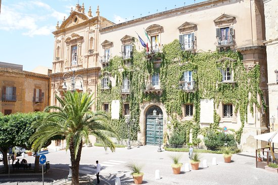

Il cuore culturale dedicato a Pirandello.
La Piazza Pirandello di Agrigento è dedicata allo scrittore Luigi Pirandello, figura centrale della letteratura italiana e premio Nobel. La piazza rappresenta un punto di riferimento culturale della città moderna.
Dal punto di vista urbano, la piazza è ordinata e moderna, con spazi ampi pensati per la fruizione pubblica e per eventi culturali. Non ha una struttura medievale o barocca, ma un’impostazione più recente e funzionale.
Gli edifici principali sono il Teatro Luigi Pirandello e il Palazzo dei Giganti, sede del municipio. Questi due elementi definiscono la doppia funzione della piazza, culturale e amministrativa.
Oggi la piazza è utilizzata soprattutto per eventi teatrali, manifestazioni culturali e incontri pubblici. È uno dei principali centri della vita culturale agrigentina.
